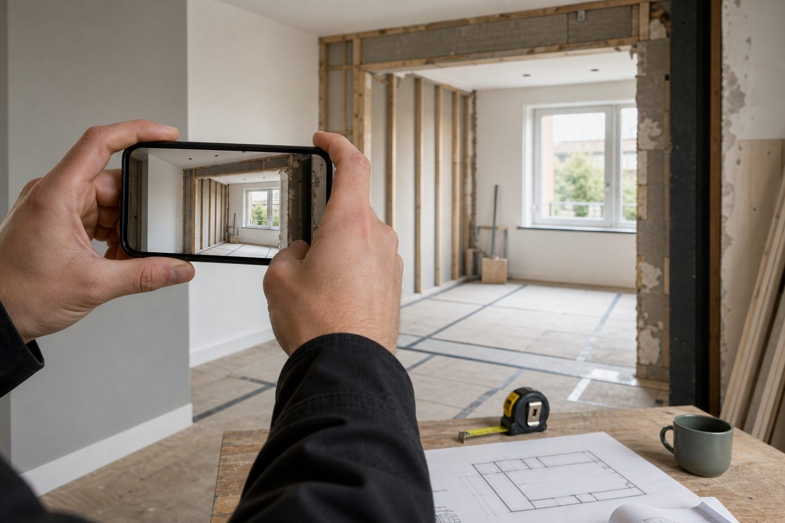
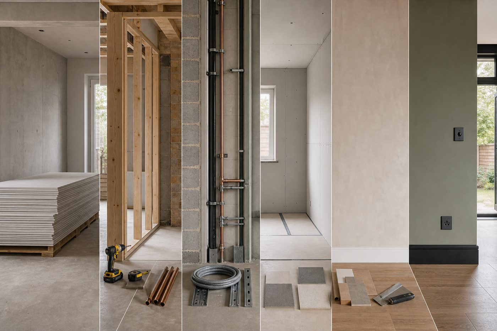

Real estate
Support thinking for owned, leased, occupied or lettable spaces before and after construction work.
AATS Construction and Development Ltd is positioned around property readiness, owned or leased real estate operation, domestic construction, completion and specialist works.
AATS is positioned for clients who want a practical property and construction partner: someone who understands the intended use of the asset, checks constraints and keeps the work tied to occupation, letting, ownership or long-term operation.


From real estate operation to domestic construction and finishing, the aim is to reduce uncertainty before work starts. That means clear notes, practical priorities, realistic timings and decisions that support the way the property will actually be used.
The brand connects real estate operation, letting readiness, owned or leased spaces, house-building, finishing and specialist activity into one coherent property service story.
Support thinking for owned, leased, occupied or lettable spaces before and after construction work.
Residential construction and improvement work for homes, plots and domestic property settings.
Finishing and final-stage work that makes a property ready for practical use.
Construction tasks requiring focused planning around constraints, access or sequence.